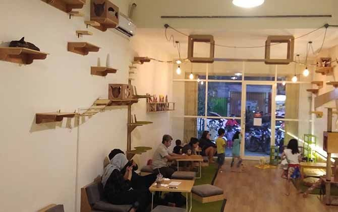
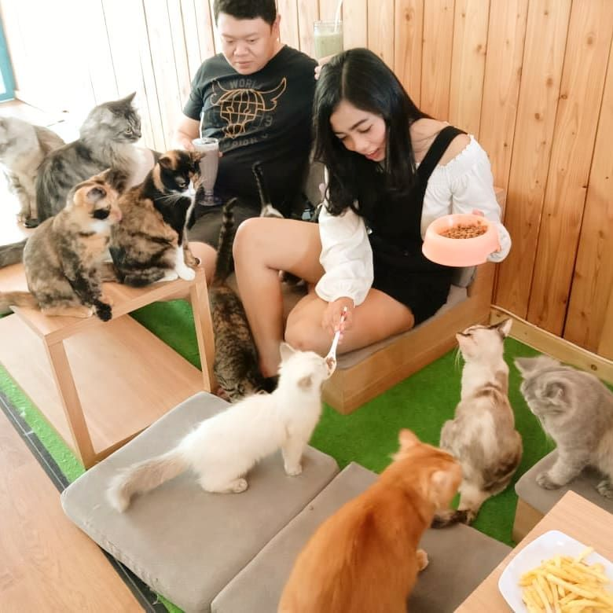
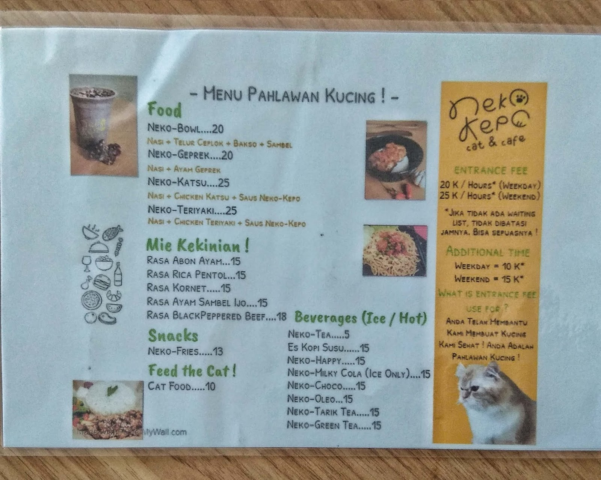
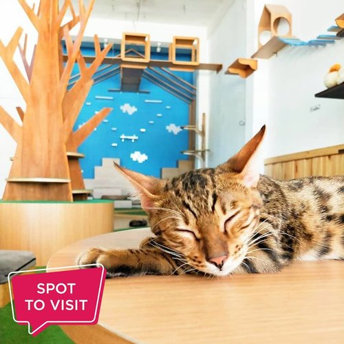
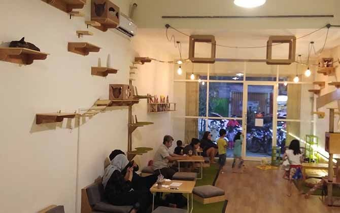
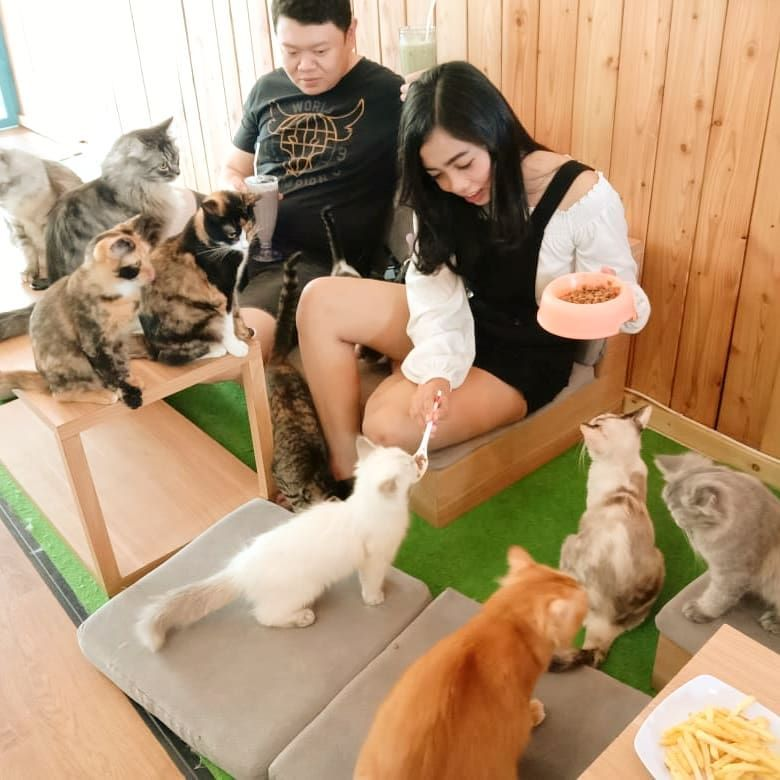
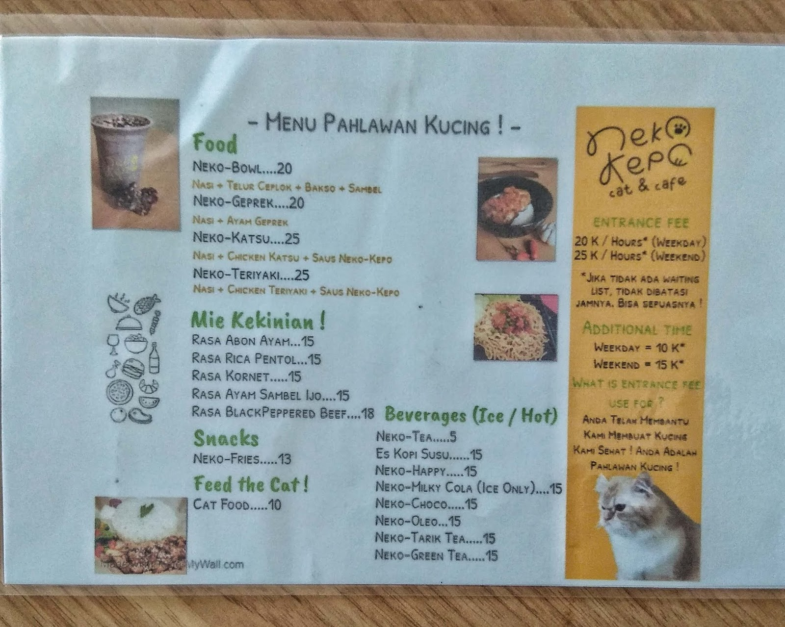
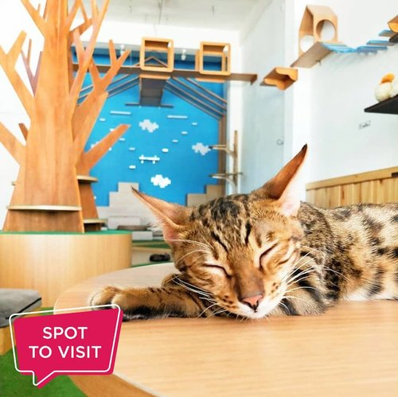

About
Neko Kepo Cat & Cafe merupakan cafe yang menggabungkan antara cat room dan cafe, Neko Kepo Cat & Cafe memiliki daya tarik khusus dimana pengunjung dapat berinteraksi langsung dengan berbagai jenis kucng, tidak sebatas menikmati sajian kuliner. Kini Neko Kepo Cat & Cafe telah memiliki empat outlet yang tersebar di kota Semarang, Surabaya, Jogja, dan Malang. "Neko" merupakan kata dari bahasa Jepang artinya "kucing" dan "Kepo" berasal dari singkatan bahasa Inggris Knowing Every Particular Object yang bisa diartikan "ingin mengetahui segala sesuatu".
Terinspirasi dari game mengelola cafe kucing, akhirnya kami berupaya mewujudkan kafe kucing milik kita sendiri di dunia nyata. Saat ini terdapat lebih dari 30 kucing dari berbagai jenis mulai dari persia, bengal, hingga domestik. Neko Kepo Cat & Cafe menyediakan kucing dengan kontrol yang ketat, sehingga pengunjung tidak perlu khawatir tentang kebersiha dan kesehatannya. Penyajian menu di Neko Kepo Cat & Cafe menggunakan kemasan yang tertutup, selain untuk menjaga higienitas, pengunjung dapat tetap aman bermain dengan kucing.
 






